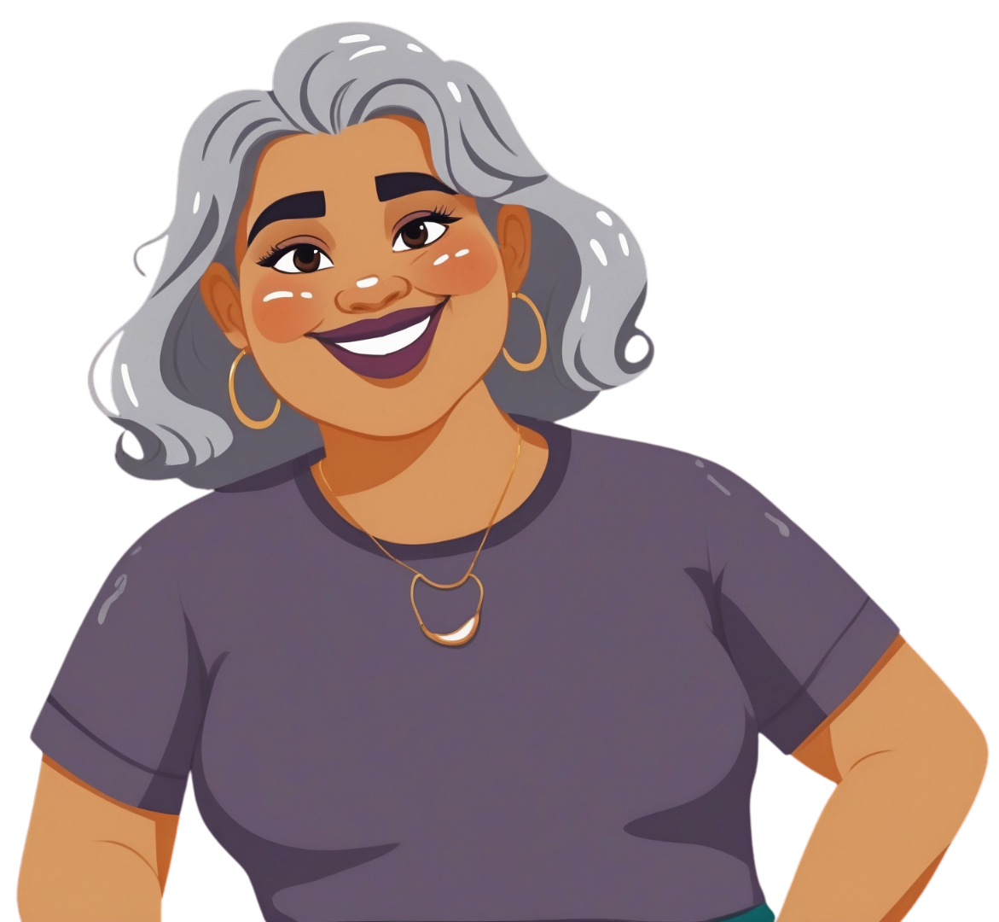

María
Fue un poco tediosa por la documentación, pero pude acceder a un aborto seguro en el Hospital de la Mujer de Puebla. Pido a los diputados que apoyen esta causa.
La tía Amparo
Acceso legal a interrupción del embarazo en Puebla.
Escríbenos por WhatsApp →
Siempre aquí para ti
Este es un proyecto de CAFIS A.C. para responder a todas tus dudas sobre cómo obtener un aborto seguro en Puebla. Inicialmente estaba dirigido a otorgar los beneficios del amparo 259/2022 que obtuvieron organizaciones locales, pero ahora que ya se despenalizó en Puebla, es tu derecho sin necesidad de un amparo.
¡Aborto legal, seguro y gratuito en Puebla, es tu derecho!
A través de WhatsApp.
Tus dudas.
Al centro de salud.